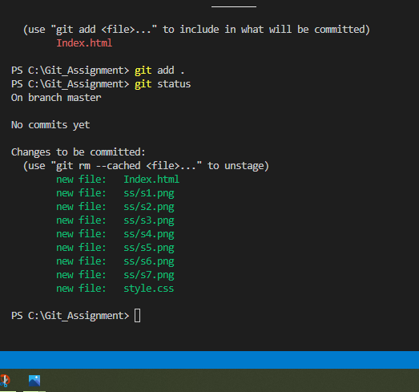

1-Download Git and VS code.
2- First of all , create a folder in your drive.
3- Click on that folder,you will see that folder is empty then create a HTML file using vs code and place that html file in that same folder which you created in step 2.
4- Open the terminal in VS code and run the command git init
5- Now check the git status by running command git status
6- Now run the command git add ( html file name here)
7- check the git status again by running the same command in step 5
8- Create a seprate CSS file and run the command git status
9- now run the command get add . and check the status
10- now run the command git rm --cached (filename here)
11- run the git add . command and check status
Now go to Github and eplore it.
12- create the private github repositry.
13- Now clone the repositry
14- now change the file content at local repository(chane color in css file)